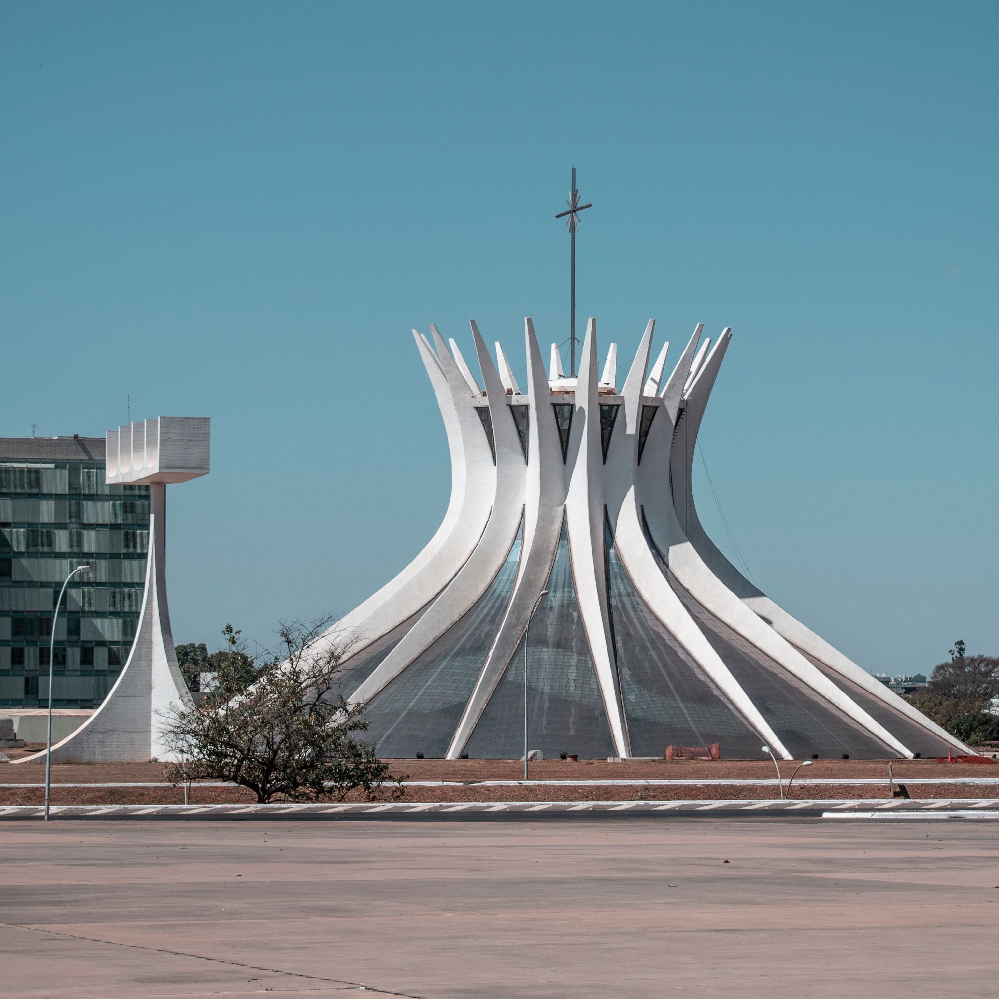

Brasília

O Distrito Federal está localizado na região Centro-Oeste do Brasil e abriga Brasília, a capital do país. Brasília é conhecida por sua arquitetura moderna, especialmente pelas obras de Oscar Niemeyer, além de importantes edifícios políticos e monumentos, como a Catedral Metropolitana..
Rio de Janeiro


O Rio de Janeiro é uma das cidades mais conhecidas do Brasil, famosa por suas praias, paisagens naturais e pontos turísticos como o Cristo Redentor e o Pão de Açúcar. A cidade combina áreas urbanas com montanhas, florestas e litoral, formando uma paisagem marcante..
Lençóis Maranhenses

Os Lençóis Maranhenses, localizados no Maranhão, são um dos principais destinos naturais do Brasil, conhecidos por suas extensas dunas de areia branca entremeadas por lagoas de águas cristalinas, formadas principalmente durante o período chuvoso. O Parque Nacional dos Lençóis Maranhenses oferece uma paisagem única, atraindo turistas de diversas partes do mundo para apreciar suas belezas naturais..
Calabrália

A Praia de Santo André, em Santa Cruz Cabrália, Bahia, fica na Costa do Descobrimento e é conhecida pela extensa faixa de areia, coqueirais, águas tranquilas e pelo encontro do Rio João de Tiba com o mar. O acesso a partir de Santa Cruz Cabrália é feito por uma curta travessia de balsa pelo rio..